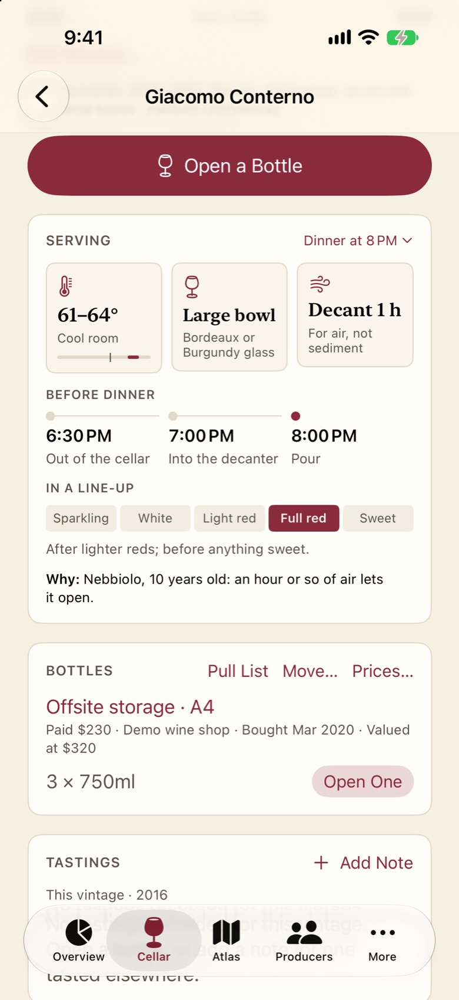
Serving card
Know how to pour it
Every wine now says how cold to serve it, which glass, how long to decant, and when to start before dinner, worked out on your phone from its style, age and bottle size.
For iPhone and Mac
The Ivy Cellar keeps every bottle with its drinking window, shows where it grows and what the weather did that year, and picks what to open this month. Your cellar stays on your devices and in your own iCloud.
Free. A small private beta on TestFlight, by invitation.
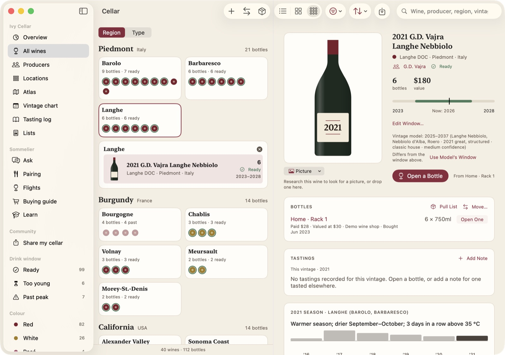
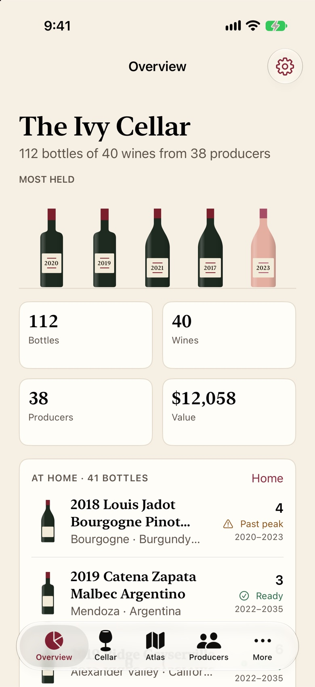
New in the beta
How to serve every bottle, one tap when you open one, your cellar on the Home Screen, and an easy way over from CellarTracker.

Serving card
Every wine now says how cold to serve it, which glass, how long to decant, and when to start before dinner, worked out on your phone from its style, age and bottle size.
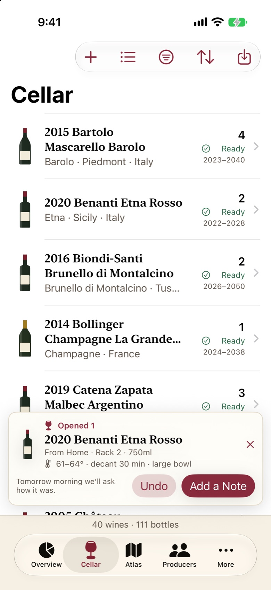
One-tap drinking
Swipe a wine to log the bottle you opened, from home first. Undo is one tap away, and the next morning a gentle reminder asks how it was.
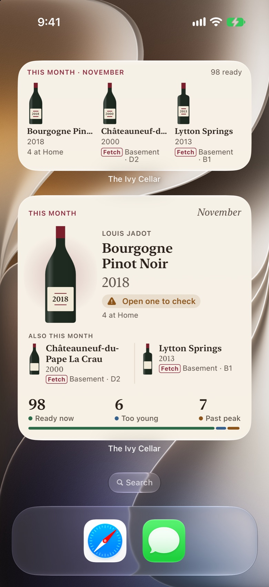
Widgets
This month's bottles on your Home Screen, what's ready on your Lock Screen, and Add Wine in Control Center. Tap a wine to open it.
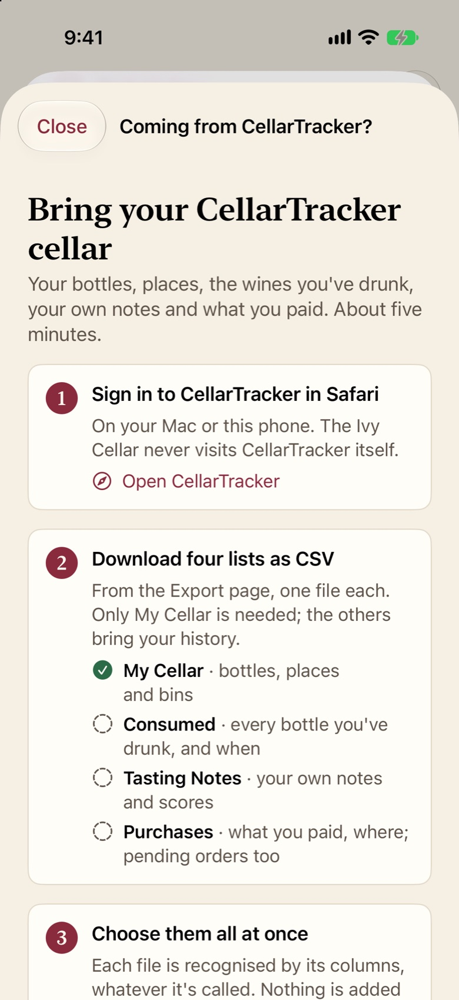
Coming from CellarTracker
Your bottles, the wines you've drunk, your own notes and what you paid, from your own CellarTracker downloads. Import again any time: nothing is doubled.
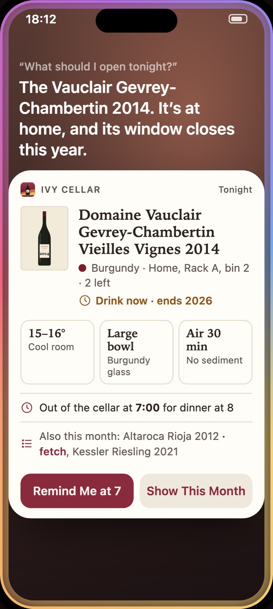
Siri & Shortcuts
Ask Siri what to open, what goes with lamb, or where a bottle is. Build Shortcuts around your cellar, and find wines in Spotlight.
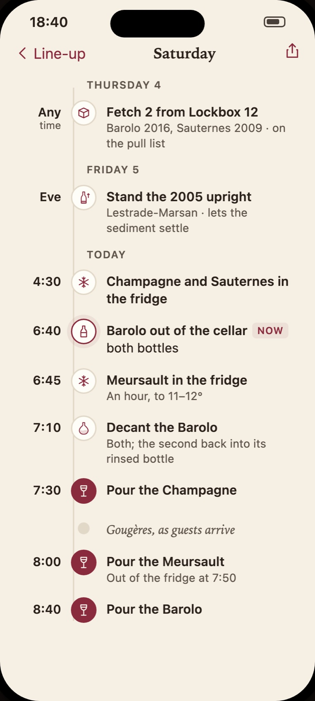
Dinner planner
Tell it the guests and the menu. It picks bottles from your cellar, sets the pouring order, and lays out when to chill, decant and fetch.
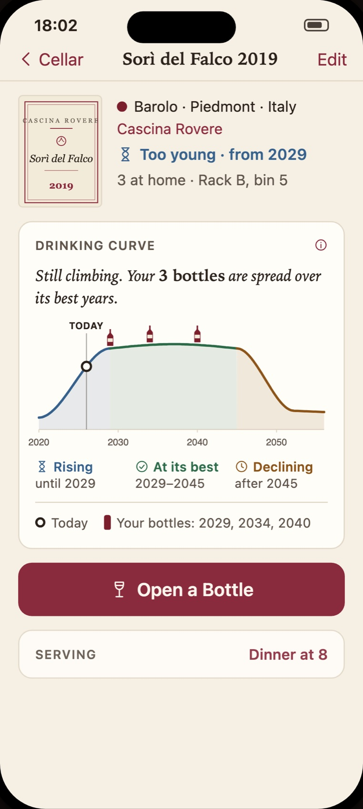
Drinking curve
A curve instead of a box: rising, at its best, then declining, with today and your bottles placed on it. Your tasting notes move it.
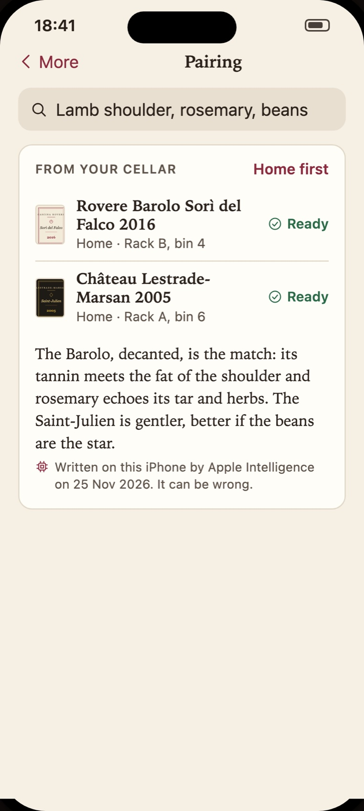
On this iPhone
On iPhones with Apple Intelligence, pairing and quick answers can run on the phone itself: free, offline, and choosing only from wines you own.
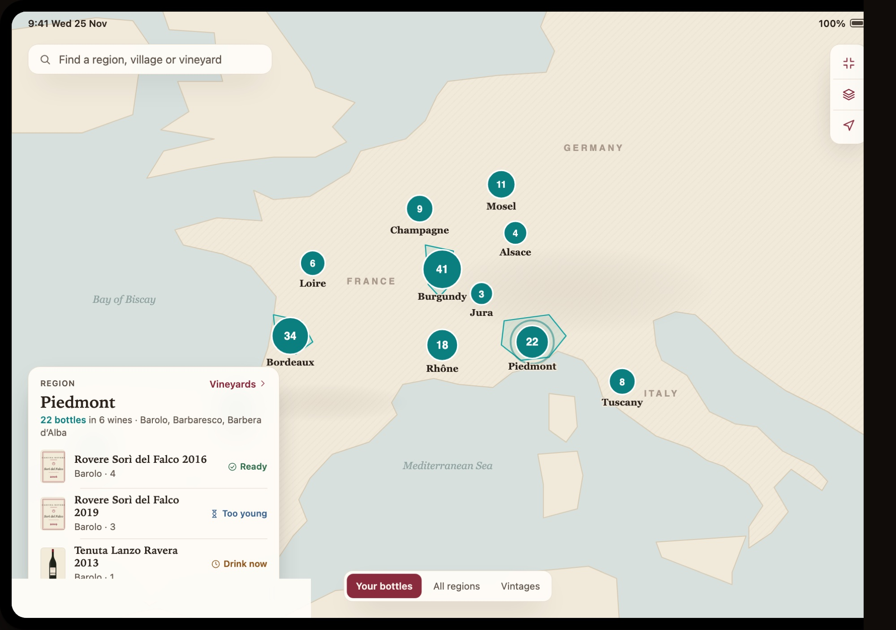
The Mac's three columns, the Atlas full screen and your racks side by side, made for touch.
What it does
Everything you need to know about the bottles you own, kept in one quiet place.
Each wine marked ready, too young or past peak, adjusted for bottle size.
Browse by wine, by label, or by bin, with every bottle coloured by readiness.
Appellation and vineyard boundaries for wine regions worldwide, with your bottles on the map.
How each year went in each region, with your bottles placed on their vintages.
Ask about your cellar, pair a dish with wines you own, or find dishes for a bottle.
With your own Claude or OpenAI key, it reads labels and receipts and looks up wines and producers.
The weather behind each vintage: warmth, rain at flowering, summer and harvest, heat and cold nights.
Lessons built from the bottles you own, and guides to regions and grapes, for newcomers to experts.
Which regions are running thin at the pace you drink, and which recent vintages to look for.
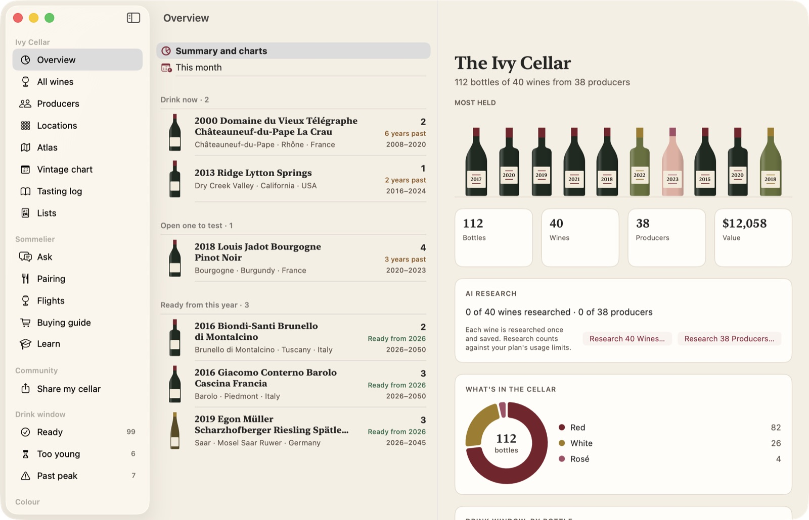
Overview
Every wine carries a drinking window, adjusted for the size of the bottle. The Overview gathers what to drink now and what to open to check how it is coming along.
This month suggests up to three wines to open, whether they are at home or need fetching from storage.
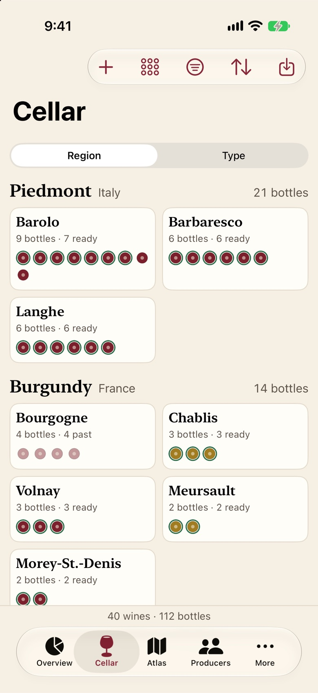
Cellar
See the whole collection at a glance. Racks group bottles into bins by region and appellation, and each bottle is a dot coloured by readiness, so the ones to open stand out.
Prefer words or labels? Switch to the list or the gallery at any time.
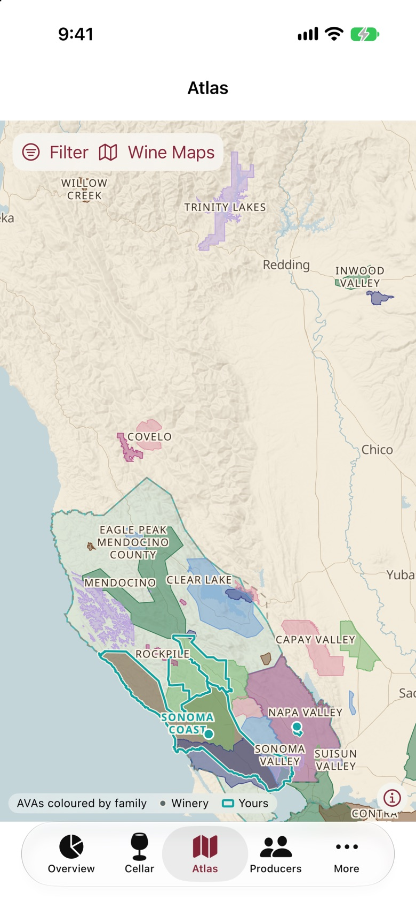
Atlas
A label names a place. The Atlas shows it: a map of vineyards and producers, with appellation and vineyard boundaries for many wine regions. The places your bottles come from are highlighted.
US AVAs, Bordeaux, Italy, Spain, Germany, Australia, New Zealand, Chile, Argentina, South Africa and more.
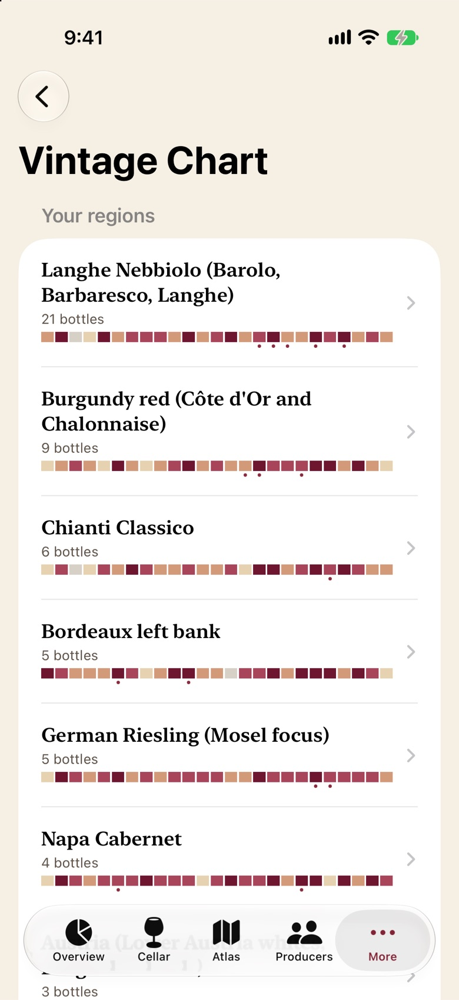
Vintage chart
Each region you collect gets a row of years, shaded by how the vintage went. Your bottles sit on their years, so you can see at a glance whether you hold the good ones.
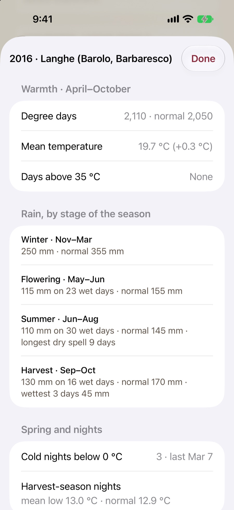
Growing seasons
Every bottle comes from one summer. The Ivy Cellar shows how that summer went in the wine's region: how warm the season ran against the 1991–2020 normal, how much rain fell at flowering, through summer and at harvest, and any heat spells or spring cold nights.
Open Season Details for the numbers, stage by stage. You'll find the season on each wine's page, under each year of the vintage chart, and beside vineyards in the Atlas.
Measured weather, not a verdict: regional ERA5 data from Copernicus, via Open-Meteo (CC BY 4.0). Built into the app, so it works offline.
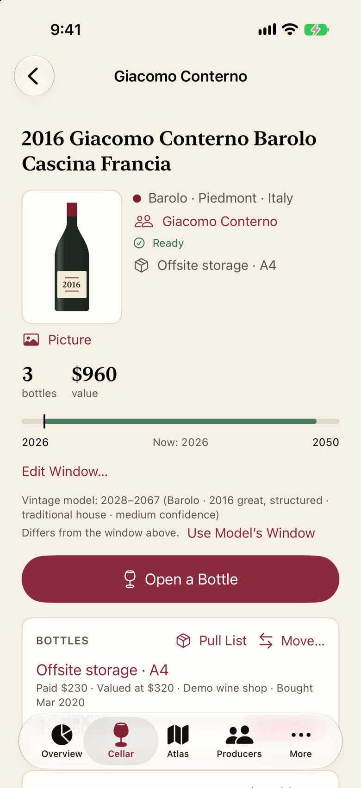
Wine page
Each wine has its own page: the window, the bottles and where they sit, what you paid, and your tasting notes. Open a bottle and the cellar updates.
AI sommelier
Ask anything about what you own, and get answers that name your bottles. Tell it what's for dinner and it picks two to four wines you actually have, saying why each works with the sauce and seasoning, not just the meat. Or start from a bottle and it suggests dishes, serving temperature, glass and how long to decant.
Research fills in each wine and producer: critics' scores with their own windows, the technical sheet, vintage reports and links to every source.
Learn
The best way to learn wine is to taste with a purpose. Learn proposes short lessons built from your own cellar: the same grape in two places, one producer across vintages, the effect of age. Each ends with the bottles to open side by side.
Guides to regions and grapes explain climate, soils, styles and how to read the labels (crus, MGAs, Prädikat, AVAs), then relate it all to the wines you hold. In the Atlas, any vineyard can be described in a few lines. Choose newcomer, enthusiast or expert, and the writing follows.
Buying and flights
The buying guide counts the ready bottles in each region against how fast you drink, shows which regions will run dry within a year and which are deep, and names the recent good vintages already in their window.
Flights finds tastings you can pour tonight: verticals of one wine across years, horizontals of one appellation and vintage, and a house's wines side by side. Add one of each to the pull list and fetch them in one trip.
No AI needed: worked out on your device from your own cellar.
Community
Share your cellar with a friend, read-only, and compare. See what you both hold, what only they hold, what only you hold, and the same wine in other years. Useful before a dinner where everyone brings a bottle.
Only the wines are shared. Prices, places and notes stay with you.
From the maker
I am a university professor who studies economics, finance and accounting. Away from work it is wine, food, and the history of places and their vineyards. The Ivy Cellar began as the cellar book for my own bottles: Barolo, Burgundy, some Mosel, and whatever else found its way in. I wanted to know what was ready, where each vineyard sits, and what the weather did the year it was picked.
A few habits from the day job came along. Sources are cited. Critics' scores are kept as facts, with links. The research is told to say only what it is confident is true.
Privacy
There is nothing to sign up for and nowhere else for your data to go. It lives on your devices and in your own private iCloud.
Open the app and start adding wine.
Your devices sync through your own iCloud.
No ads, ever.
No analytics in the app or on this site.
Read the privacy policy.
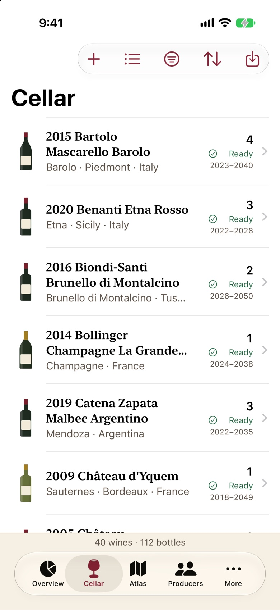
iPhone and Mac
Check what you have from the wine shop on your phone, then plan the month on the Mac at home.
Import from CellarTracker or any spreadsheet.
Everything is on the device, even in the cellar.
Syncs through your private iCloud.
Save your whole cellar, pictures included, to one file whenever you like.
The Ivy Cellar is free and in a small private beta on TestFlight, for iPhone and Mac. Write and ask for an invitation; a line about what you collect is always welcome.
Request an invitation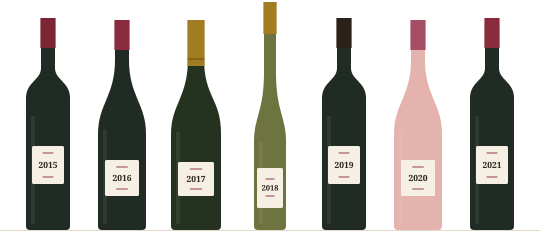